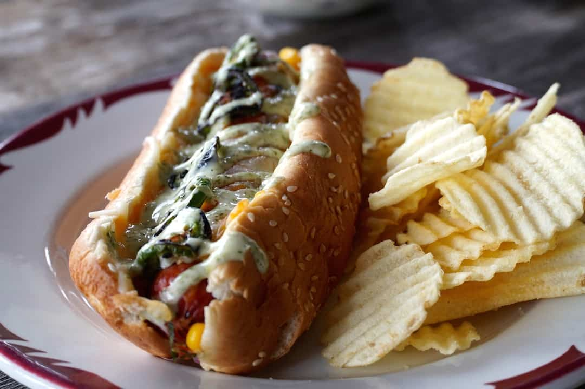

Hot dog

Description
This great tex dex hot dog recipe scores top marks in both appearance and flavour.
Ingredients
- Hot dog bun
- Hot dog wiener
- Corn salsa
- Grilled jalapeños
- Monterey Jack cheese
- Lime-cilantro mayo
Steps
- Prepare the hot dogs: Preheat grill to 500°F. Using a pairing knife, cut small 45° slits along the length of the wieners, marking every half-inch and going about halfway deep. Transfer the wieners onto the hot grill and cook for about 5 minutes, turning occasionally to ensure they’re uniformly cooked.
- Open buns on work surface and spoon equal amounts of corn salsa onto each, spreading it out evenly
- Place one cooked wiener onto each bun. Sprinkle with Monterey Jack then add slices of grilled jalapeños. Place prepared hot dogs into an oven-safe casserole or rectangular baking pan
- Transfer to preheated 250°F oven and bake for 10-15 minutes or until cheese has melted and bun is toasted.
- Combine mayo, lime juice and cilantro and add to hot dogs as garnish. Serve immediately.